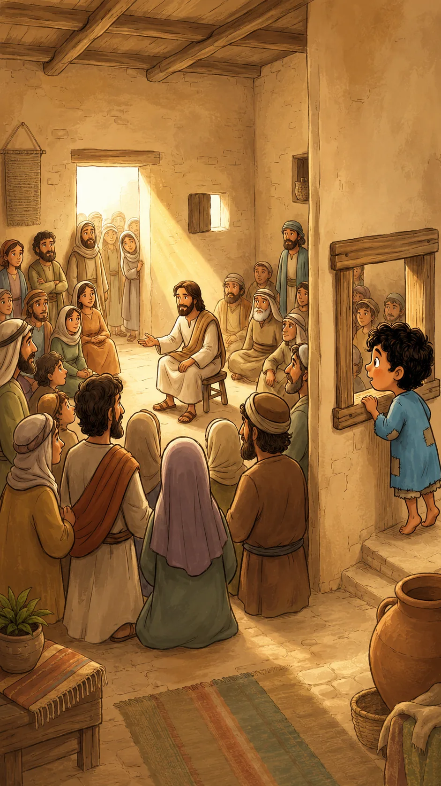
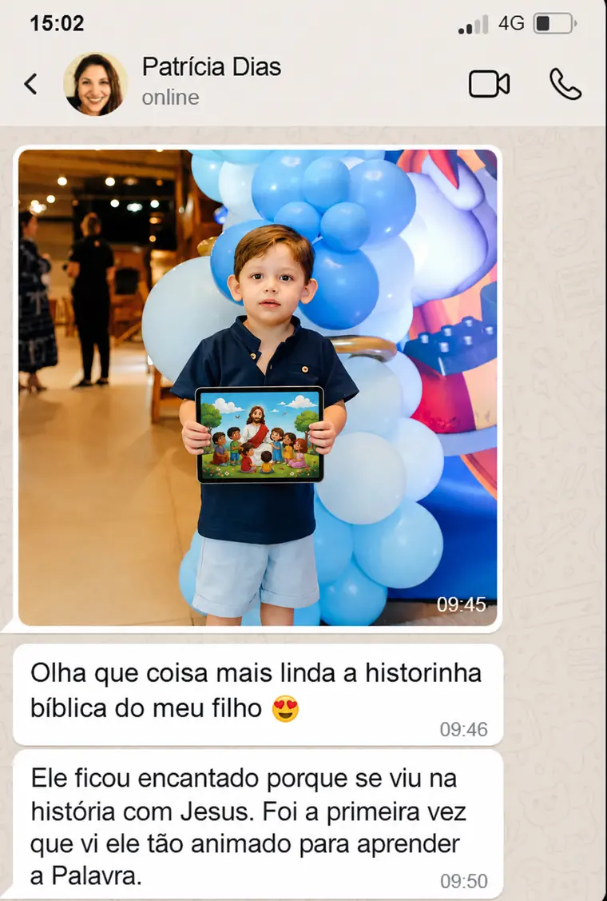

Parte 1
Rafael chegou perto da casa e viu uma multidão ouvindo Jesus. Mesmo pequeno, ele sentiu que algo importante estava para acontecer.
Um aplicativo simples que coloca o nome do seu filho dentro das histórias da Bíblia e faz ele amar aprender sobre Deus.

O que é e como funciona
Historinhas Bíblicas Infantis é um aplicativo em que você cria, em segundos, uma historinha bíblica com o nome do seu filho. Ele vira protagonista da história e aprende a lição vivendo aquele momento.
Você escolhe a lição que quer ensinar: coragem, perdão, obediência ou amor ao próximo. O app gera uma história em que Rafael conversa com Jesus, Davi, Noé, Moisés ou os apóstolos.
Use histórias clássicas da Bíblia, como Davi e Golias, a Multiplicação dos Pães e Peixes ou Noé e o Dilúvio, ou crie uma história do zero para a lição que seu filho precisa ouvir hoje.
Histórias ilimitadas, ilustrações coloridas, lição no final e tudo pronto em menos de 2 minutos.
Exemplo de historinha personalizada
Baseada em Marcos 2 e Lucas 5, com a criança participando da cena de um jeito simples, respeitoso e encantador.

Rafael chegou perto da casa e viu uma multidão ouvindo Jesus. Mesmo pequeno, ele sentiu que algo importante estava para acontecer.

Quatro amigos trouxeram um homem em uma maca. Rafael percebeu que eles não desistiriam de levá-lo até Jesus.
Como a porta estava cheia, eles subiram pelo telhado. Rafael ajudou com cuidado e aprendeu que a fé também encontra um caminho.
Quando a maca desceu, Jesus olhou com amor. Rafael ouviu: "Filho, os teus pecados estão perdoados."
Jesus disse ao homem para levantar e ir para casa. Rafael viu todos se alegrarem e entendeu que Jesus tem poder para restaurar.

Na volta, Jesus ensinou Rafael: "Nunca desista de fazer o bem. A fé verdadeira caminha junto com o amor."
O que você recebe
Use histórias bíblicas clássicas ou crie histórias únicas do zero, com nome e características do seu filho.
Dicas simples de voz, pausas e gestos para prender a atenção da criança, mesmo se você nunca contou histórias.
Perguntas prontas para fazer depois da historinha e fixar a lição no coração da criança.
Colorir, montar e brincar. A história continua mesmo depois que o aplicativo é fechado.
O que as mães estão dizendo


Acesso imediato e vitalício
ou R$ 29,90 à vista. Acesso imediato e vitalício.
Você cria a primeira história em menos de 2 minutos depois de comprar. Se não gostar, pode pedir reembolso dentro do prazo.
Por que não é a mesma coisa que um livro personalizado
Tem empresa vendendo livro físico personalizado por mais de R$ 100. Você espera semanas para chegar, a criança lê uma vez e ele vai para a estante. Com o Historinhas Bíblicas Infantis, você tem histórias ilimitadas, na hora, no celular. Toda semana uma história nova, toda vez uma lição diferente, e seu filho sempre como protagonista.
Dúvidas comuns
Não precisa saber. O app entrega a história pronta e o guia ensina como ler de um jeito que a criança fica grudada.
Quando a criança ouve o próprio nome dentro da história, ela muda de postura. Ela quer saber o que vai acontecer com ela.
Não tem nada para preparar. Você abre o app, digita o nome, escolhe a lição e a história sai pronta em cerca de dois minutos.
Você recebe tudo pelo e-mail usado na compra. Enviamos o link de acesso para você entrar no aplicativo e começar a criar as historinhas.
Você tem 30 dias de garantia. Se não gostar ou perceber que não é para você, pode pedir o reembolso dentro desse prazo.
Sim, é extremamente simples. Você só precisa escrever o que quer, colocar o nome da criança e o aplicativo faz tudo sozinho.